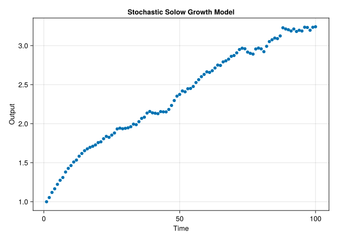

The Monte Carlo Method: (i) A last resort when doing numerical integration, and (ii) a way of wastefully using computer time. - Malvin H. Kalos1 (c. 1960)
15.1 In This Chapter
Brief overview of stochastic modeling concepts. Random inputs vs. embedded randomness in stepwise models. Key components: distributions, time horizons, state space. Evaluating outputs with expectation, variance, and risk measures. Special properties like Markov, stationarity, and SDEs. Practical finance examples with Julia code for scenario generation and macroeconomic simulations.
15.2 Introduction
Stochastic modeling is the technique of running many similar scenarios through a model in order to evaluate different aspects of a given model. Some contexts in which stochastic modeling arises in the financial context include:
Valuation. Market consistent pricing often involves calibrating a set of stochastic economic scenarios to market-observed prices. Those calibrated scenarios are then used to determine the value of another set of contracts for which market prices are not directly observable.
Scenario Analysis. Many financial models have a high degree of complexity and interactions between components not well understood a priori. Using a set of calibrated or otherwise arbitrary scenarios can illuminate unexpected or interrelated behavior that arises from the model. Sometimes financial assets and liabilities have a path-dependency, meaning that the overall behavior or value is a function of the entire path taken (e.g. an asian option).
Risk and Capital Analysis. Whether model parameters are point estimates (“an asset has a \(1\%\) probability of default”) or distributions (“an asset has a probability of default distributed as \(Beta(1,99)\)”), stochastic modeling can be utilized to determine projected capital levels for a company or line of business at certain security levels.
The modeled outcomes are only as good as the scenarios and model themselves. For example, for many years the predominant economic scenario generator for US regulated insurance liabilities (the American Academy of Actuaries’ Economic Scenario Generator) would produce interest rate paths that were substantially higher than then-current market-implied paths. It’s erroneous in those circumstances to compute the 99th-percentile scenario and characterize the scenario as “extreme.” Similarly, there may be known or unknown deficiencies with the modeled behavior and this should be considered by the modeler when discussing the results.
Recall the kinds of uncertainties in ?tbl-uncertainties - stochastic modeling implementations often mechanically only address the aleatory (process) volatility component of outcome uncertainty. Through techniques like developing a posterior distribution for model parameters (@sec-bayes-rule) we can also explicitly attempt to model epistemic (parameter) uncertainty as well.
15.3 Fundamentals of Stochastic Modeling
Stochastic modeling represents a significant departure from deterministic approaches by explicitly incorporating randomness and uncertainty. Before diving into specific modeling techniques, it’s essential to understand the fundamental concepts that form the foundation of any stochastic model.
15.3.1 Random Variables and Probability
At the core of stochastic modeling is the concept of random variables—quantities whose values depend on random outcomes. In financial contexts, random variables might represent:
Future interest rates
Stock price movements
Insurance claim frequencies
Default probabilities
Mortality rates
These random variables are characterized by probability distributions that describe the likelihood of different outcomes. For example, stock returns might follow a normal distribution, while insurance claims might follow a Poisson distribution for frequency and a LogNormal distribution for severity.
15.3.2 The Role of Monte Carlo Simulation
Despite the opening quote’s humorous skepticism, Monte Carlo methods have become indispensable in modern financial modeling. Named after the famous casino, these techniques use repeated random sampling to obtain numerical results when analytical solutions are impractical or impossible.
The basic procedure involves:
Generating random inputs based on specified probability distributions
Running the model with these inputs
Collecting and analyzing the outputs
Repeating until sufficient samples are obtained for statistical significance
As computational power has increased, Monte Carlo methods have moved from “last resort” to standard practice in many financial applications. In addition to this conceptual chapter, Chapter 26 demonstrates this process to generate stochastic economic scenarios.
15.3.3 Time Dimensions in Stochastic Models
Stochastic models can be categorized based on how they treat time:
Discrete-time models: The system evolves in distinct time steps (daily, monthly, annually)
Continuous-time models: The system evolves continuously, often described by stochastic differential equations
Financial applications frequently use both approaches. For example, option pricing might use continuous-time models (Black-Scholes), while asset-liability management might use discrete-time models with monthly or quarterly steps.
15.3.4 State Spaces and Transitions
A stochastic model’s state space represents all possible states the system can occupy. This might be:
Discrete: Limited number of possible states (e.g., credit ratings: AAA, AA, A, etc.)
Continuous: Infinite possible states (e.g., stock prices can take any positive real value)
The transitions between states are governed by probability distributions or transition matrices, depending on the model type. Understanding the state space is crucial for properly formulating and solving stochastic problems in finance.
15.3.5 Aleatory vs. Epistemic Uncertainty
Stochastic models address two fundamental types of uncertainty: - Aleatory uncertainty: The inherent randomness in the system (e.g., market volatility) - Epistemic uncertainty: Uncertainty due to limited knowledge about model parameters
Most basic stochastic models focus on aleatory uncertainty, assuming model parameters are known with certainty. More sophisticated approaches incorporate epistemic uncertainty by treating parameters themselves as random variables, often using Bayesian methods.
15.3.6 Calibration and Validation
Before a stochastic model can be applied, it must be properly calibrated to match observed data or market prices. This typically involves:
Establishing initial parameters via professional judgment or statistical means.
Adjusting parameters to match desired calibration data: e.g. minimizing a loss function with respect to the predicted outcomes versus the calibration data (see @sec-optimization).
Validating the model against out-of-sample data.
For financial applications, models are often calibrated to be “market-consistent,” meaning they reproduce the prices of traded instruments before being used to value more complex products.
15.3.7 Computational Considerations
Stochastic modeling is computationally intensive, particularly when: - Many scenarios are required for convergence - The model has high dimensionality - Path dependencies require storing entire trajectories
Modern implementations leverage parallel processing, variance reduction techniques, and sometimes machine learning approximations to make complex stochastic models computationally feasible.
With these fundamental concepts in mind, we can now explore specific types of stochastic models and their applications in finance and actuarial science.
15.3.8 Kinds of Stochastic Models
15.3.8.1 Input Ensemble
In this approach, you first generate many sets of random inputs (scenarios) and then run the same model repeatedly—one run per scenario2:
Interest Rate Scenarios for Bond Portfolios
Generate thousands of yield-curve scenarios (e.g., parallel shifts, twists) to test how a bond portfolio might perform over time. By averaging the results over all simulations, you can estimate the portfolio’s expected return or risk metrics.
Commodity Price Paths for Hedging
Create multiple possible paths for commodity prices under different macro conditions. Use these to evaluate various hedging strategies and see which one consistently mitigates risk across a wide range of market conditions.
Generally, models programmed in code can easily map across a large number of stochastic inputs.
15.3.8.2 Random State
Here, the model itself “rolls the dice” at each step. Instead of pre-generating input scenarios, the randomness is embedded in the logic that evolves the state over time3:
Property & Casualty Claims Simulation
In each simulated month, randomly draw the number of claims (from a Poisson or negative binomial distribution), then randomly assign the severity of each claim (often a lognormal or gamma distribution). The insurer’s financial state (reserves, surplus) evolves based on these simulated losses.
Call-Center (Queueing) Model
Model the random arrival of customer calls following a Poisson process, and at each arrival decide if the call is answered immediately or queued. Service times for each call can be drawn from an exponential distribution. By simulating many days, you can estimate average waiting times or the probability that a caller has to wait more than a certain threshold.
Note
Many financial models project outcomes using expected values of random variables. Many actuarial models utilize this approach to determine expected outcomes given an assumption (such as expected present value of life insurance claims). This is different than evaluating many possible discrete realized scenarios wherein each insured life either dies or survives each period, and models designed for projected expected payments need to be adapted to handle a random state approach.
15.3.8.3 Closed-Form
Some stochastic processes admit analytical solutions or formulas for key quantities, so you do not need to run a simulation for each scenario. For example, here a a couple of common models that have closed form solutions to the underlying stochastic differential equation.
Black Scholes Option Price
The Black-Scholes European call and put-call price parity are results for analytically pricing options despite the underlying theory being based on a stochastic evolution of asset prices.
Ornstein-Uhlenbeck Interest Rate Model
An Ornstein-Uhlenbeck process is often used to model mean-reverting interest rates. Despite being fundamentally stochastic, it has closed-form expressions for zero-coupon bond prices and other interest-rate derivatives, saving you from running thousands of random simulations for valuation.
The focus of this section will be on the other kinds of computational-driven, stochastic models.
15.3.8.4 Special Cases or Properties
Stochastic processes often combine several structural or theoretical properties to reflect real-world phenomena in financial and actuarial models. Before diving into each property—Markov, stationarity, martingales, and SDEs—it can be useful to see how they serve as building blocks. For example, Markov processes allow today’s decisions or valuations to depend only on the current state, whereas stationarity implies that the underlying statistical characteristics (mean or variance) do not change over time. Martingales capture a notion of “fairness” in gambling and risk-neutral pricing, and SDEs inject random shocks in a continuous-time setting. By understanding these properties, one can better see which assumptions are embedded in derivatives pricing, credit migration models, or mortality forecasts.
15.3.8.4.1 Markov Models
A stochastic process has the Markov property if the future state depends only on the current state and not on the past states (memorylessness). Markov chains and hidden Markov models contain this property. The Markov property simplifies modeling and computation by reducing dependencies on past states. For instance, a credit rating model might assume that the probability of going from BBB to BB depends only on today’s rating, without direct reference to prior years’ ratings.
15.3.8.4.2 Stationary Models
A stochastic process is stationary if its statistical properties, such as mean and variance, do not change over time. Strict stationarity means all moments of the process are invariant over time, while weak Stationarity means only the mean and variance are invariant over time. Stationarity simplifies the analysis and modeling of stochastic processes, especially for time series data. Sometimes a non-stationary model can be made stationary by transformation (such as removing a constant trend component).
15.3.8.4.3 Martingales
A martingale is a stochastic process where the expected future value, given all prior information, is equal to the current value. Examples include fair gambling games or financial asset prices in efficient markets. Martingales are important in financial modeling and risk-neutral pricing, especially for derivatives.
These are differential equations that incorporate stochastic terms (typically driven by Brownian motion or other noise sources). The well-known Black-Scholes equation for option pricing is one example of how SDE can be applied in real world. SDEs are essential for modeling systems where both deterministic and random factors drive behavior over time.
A special kind of SDE is Brownian Motion. This is a continuous-time stochastic process where changes over time are independent and normally distributed. This is extensively used in financial models for asset price movements (e.g., the Black-Scholes model). In addition to financial markets, Brownian motion is also widely used in modeling physical systems (diffusion).
In practice, these properties often occur together in financial models.
15.3.9 Components of Stochastic Models
Stochastic modeling has additional terminology to introduce.
15.3.9.1 Random variables
A random variable represents a quantity whose value is determined by the outcome of a random event. It can be discrete or continuous. It is essentially a mapping from event space to numerical values. Examples include stock prices, waiting time in queues and number of claims in insurance, etc. Random variables form the basis of stochastic models by introducing uncertainty into the model.
15.3.9.2 Probability distributions
A probability distribution describes the likelihood of different outcomes for a random variable. Examples include normal distribution, Poisson distribution and exponential distribution, etc. Probability distributions help in modeling the behavior of random variables and in defining how likely different events or outcomes are.
15.3.9.3 State space
The state space represents all possible states or values that a stochastic process can take. For example, in a Markov process, the state space might be the set of all possible values that the system can occupy at any given time. The state space helps in defining the scope of the model by specifying possible outcomes.
15.3.9.4 Stochastic processes
A stochastic process is a collection of random variables indexed by time (or some other variable) that evolve in a probabilistic manner. Examples include Brownian motion, Markov chains and Poisson processes. Stochastic processes model how random variables change over time, which is essential for understanding dynamic systems influenced by randomness.
15.3.9.5 Transition probabilities
These represent the probabilities of transitioning from one state to another in a stochastic process. For example, in a Markov chain, the transition matrix contains the probabilities of moving from one state to another. Transition probabilities determine how the system evolves from one time step to the next, reflecting the underlying randomness.
15.3.9.6 Time horizon
The time horizon refers to the period over which the stochastic process is observed. It can be discrete (e.g., steps in a Markov chain) or continuous (e.g., continuous-time models like Brownian motion). The time horizon helps in determining how the process behaves over short or long periods.
15.3.9.7 Initial conditions
These are the starting points or initial values of the random variables or the system at time zero. They may be initial price of a stock, initial number of customers in a queue, etc. The starting condition influences the future evolution of the process, and different initial conditions can lead to different outcomes.
15.3.9.8 Noise (random shocks)
Random noise represents unpredictable random fluctuations that can affect the outcome of a stochastic process. This can be market volatility, measurement errors or environmental variations. Noise is a critical element in stochastic models as it introduces randomness and uncertainty into otherwise deterministic systems.
15.4 Evaluating and Applying Stochastic Models
15.4.1 Evaluating Stochastic Results
These types of models are evaluated simply by running them many times until the measure of interest converges on a stable result: for example, we might run a model until the mean of the results no longer varies materially as we add more scenarios.
15.4.1.1 Expectation and variance
The expected value (mean) represents the average or mean outcome of a random variable over many trials or realizations. The variance measures the spread or variability of outcomes around the expected value. These statistical measures provide insights into the central tendency and the uncertainty or risk in a stochastic model.
15.4.1.2 Covariance and correlation
Covariance measures how two random variables change together. Positive covariance indicates that the variables tend to increase together. On the other hand correlation is the standardized version of covariance that measures the strength of the linear relationship between two variables. Understanding how different random variables interact helps in building more complex models, especially in multivariate stochastic processes.
15.4.1.3 Risk Measures
Risk measures encompass the set of functions that map a set of outcomes to an output value characterizing the associated riskiness of those outcomes. As is usual when attempting to compress information (e.g. condensing information into a single value), there are multiple ways we can characterize this riskiness.
15.4.1.3.1 Coherence & Other Desirable Properties
Further, it is desirable that a risk measure has certain properties, and risk measures that meet the first four criteria are called “Coherent” in the literature. From “An Introduction to Risk Measures for Actuarial Applications” ((Hardy 2006)), she describes four properties. Using \(H\) as a risk measure and \(X\) as the associated risk distribution:
15.4.1.3.1.1 1. Translation Invariance
For any non-random \(c\)
\(H(X + c) = H(X) + c\) This means that adding a constant amount (positive or negative) to a risk adds the same amount to the risk measure. It also implies that the risk measure for a non-random loss, with known value c, say, is just the amount of the loss c.
15.4.1.3.1.2 2. Positive Homogeneity
For any non-random \(λ > 0\):
\[H(λX) = λH(X)\]
This axiom implies that changing the units of loss does not change the risk measure.
15.4.1.3.1.3 3. Subadditivity
For any two random losses \(X\) and \(Y\),
\[H(X + Y) ≤ H(X) + H(Y)\]
It should not be possible to reduce the economic capital required (or the appropriate premium) for a risk by splitting it into constituent parts. Or, in other words, diversification (ie consolidating risks) cannot make the risk greater, but it might make the risk smaller if the risks are less than perfectly correlated.
15.4.1.3.1.4 4. Monotonicity
If \(Pr(X ≤ Y) = 1\) then \(H(X) ≤ H(Y)\).
If one risk is always bigger then another, the risk measures should be similarly ordered.
Completeness is the property that the distortion function associated with the risk measure produces a unique mapping between the original risk’s survival function \(S(x)\) and the distorted \(S*(x)\) for each \(x\). See Distortion Risk Measures for more detail on this.
In practice, this means that a non-complete risk measure ignores some part of the risk distribution (e.g. CTE and VaR don’t use the full distribution and have the same)
Exhaustive
A risk measure is “exhaustive” if it is coherent and complete.
Adaptable
A risk measure is “adapted” or “adaptable” if its distortion function (see Distortion Risk Measures).
\(g\) is strictly concave, that is \(g\) is strictly decreasing.
\(lim_{u\to0+} g\prime(u) = \inf\) and \(lim_{u\to1-} g\prime(u) = 0\).
Adaptive risk measures give more weight to larger losses. They are exhaustive but the converse is not true.
Distortion Risk Measures are a way of remapping the probabilities of a risk distribution in order to compute a risk measure \(H\) on the risk distribution \(X\).
Adapting (Wang 2002), there are two key components:
15.4.1.5 Distortion Function \(g(u)\)
This remaps values in the [0,1] range to another value in the [0,1] range, and in \(H\) below, operates on the survival function \(S\) and \(F=1-S\).
Let \(g:[0,1]\to[0,1]\) be an increasing function with \(g(0)=0\) and \(g(1)=1\). The transform \(F^*(x)=g(F(x))\) defines a distorted probability distribution, where “\(g\)” is called a distortion function.
Note that \(F^*\) and \(F\) are equivalent probability measures if and only if \(g:[0,1]\to[0,1]\) is continuous and one-to-one. Definition 4.2. We define a family of distortion risk-measures using the mean-value under the distorted probability \(F^*(x)=g(F(x))\):
15.4.1.6 Risk Measure Integration
To calculate a risk measure \(H\), we integrate the distorted \(F\) across all possible values in the risk distribution (i.e. \(x \in X\)):
That is, the risk measure (\(H\)) is equal to the expected value of the distortion of the risk distribution (\(E^*(X)\)).
15.4.1.7 Risk Measures: Examples
15.4.1.7.1 Basic Comparison
We won’t re-implement the logic here, but here’s a very simple example demonstrating the relative values of VaR, CTE, and a Wang Transform at the 90% level. These functions come from the public library ActuaryUtilities.jl.
We will generate a random outcome and show how the risk measures behave:
usingDistributionsusingActuaryUtilitiesusingCairoMakie# the assumed distribution of outcomesoutcomes =Weibull(1, 5)αs =range(0.00, 0.99; length=100)let f =Figure() ax =Axis(f[1, 1], xlabel="α", ylabel="Loss", title="Comparison of Risk Measures", xgridvisible=false, ygridvisible=false, )lines!(ax, αs, [quantile(outcomes, α) for α in αs], label="Quantile α of Outcome", color=:grey10, linewidth=3, )lines!(ax, αs, [VaR(α)(outcomes) for α in αs], label="VaR(α)", linestyle=:dash )lines!(ax, αs, [CTE(α)(outcomes) for α in αs], label="CTE(α)", )lines!(ax, αs[2:end], [WangTransform(α)(outcomes) for α in αs[2:end]], label="WangTransform(α)", )lines!(ax, αs, [ProportionalHazard(2)(outcomes) for α in αs], label="ProportionalHazard(2)", )lines!(ax, αs, [DualPower(2)(outcomes) for α in αs], label="DualPower(2)", )lines!(ax, αs, [RiskMeasures.Expectation()(outcomes) for α in αs], label="Expectation", )axislegend(ax, position=:lt) fend
15.4.2 Variance Reduction Techniques
While Monte Carlo simulation is a powerful approach for modeling complex financial or actuarial systems, it can require a very large number of random draws for the results to converge. When there have been a limited number of runs, the variance of the sampled results can be high, and vary materially between different sets of stochastic runs. This can be addressed by simply running more scenarios, but can be computationally expensive, particularly when path-dependent processes—or high-dimensional models—are involved. For this reason, several “variance reduction techniques” have been established to improve efficiency without reducing accuracy. They work by designing the way we draw samples (or process them) so that desired statistics converge more quickly.
15.4.2.1 Control Variates
A control variate is a random variable whose expected value is already known (or can be estimated with high precision). By simulating the main process alongside the control variate and leveraging the difference in outcomes, the overall variance of the estimator is reduced. In finance, for instance, one might use a simpler instrument whose price is analytically known as a control variate when simulating a more complex derivative.
15.4.2.2 Antithetic Variates
In this technique, each random draw (X) is paired with a corresponding draw (-X) or another symmetric transformation. The idea is that positive and negative deviations tend to cancel out, thereby reducing overall variability. For example, if simulating geometric Brownian motion paths, each path with a particular series of random shocks could be matched with a path using the same shocks negated. Updating estimates with the average result of these pairs generally yields a lower variance for the same number of total draws.
15.4.2.3 Stratified Sampling
Instead of sampling purely at random across the entire probability distribution, the distribution is divided into “strata” (or sub-intervals), and draws are forced to fall into each of these strata with a pre-specified frequency. By covering the distribution more systematically, the resulting estimates often converge faster. This is sometimes called quasi-Monte Carlo and involves techniques to span the sample space that is less random but still unbiased. Julia has a package for this called QuasiMonteCarlo.jl
Together, these techniques reflect a crucial principle of computational thinking: by leveraging structure or known properties of the simulation, you can achieve more accurate estimates with fewer overall scenarios. That translates into faster runs, less strain on computational resources, and better performance when embedding these methods in large-scale models or iterative processes.
15.4.3 Stochastic Modeling: Examples
15.4.3.1 Macroeconomic Analysis
Here we show still another stochastic process in macroeconomic analysis. Stochastic macroeconomic analysis often involves modeling random shocks and their effects on macroeconomic variables such as output, consumption, inflation, and employment. One common approach is through Dynamic Stochastic General Equilibrium (DSGE) models, which are widely used in macroeconomic analysis. These models incorporate randomness (stochastic elements) to capture real-world uncertainty in economic systems.
usingRandom, CairoMakie, Distributions# Parametersα =0.33# Capital share of outputδ =0.05# Depreciation rates =0.2# Savings raten =0.01# Population growth rateg =0.02# Technology growth rateσ =0.01# Standard deviation of productivity shocksT =100# Number of periods to simulateK0 =1.0# Initial capital stockA0 =1.0# Initial productivity# Shock distribution (normal distribution for productivity shocks)shock_distribution =Normal(0, σ)# Random number generator (Xoshiro as default with a seed to ensure reproduciabiity)rng_gen =Xoshiro(1234)# Function to simulate the modelfunctionsimulate_stochastic_solow(T, α, δ, s, n, g, σ, K0, A0) K =zeros(T) # Capital over time Y =zeros(T) # Output over time A =zeros(T) # Productivity shocks over time A[1] = A0 # Initial productivity K[1] = K0 # Initial capitalfor t in1:T-1# Apply random productivity shock ε_t =rand(rng_gen, shock_distribution) A[t+1] = A[t] *exp(ε_t) # Productivity evolves stochastically# Output based on Cobb-Douglas production function Y[t] = A[t] * K[t]^α# Capital accumulation equation K[t+1] = s * Y[t] + (1- δ) * K[t]# Population and technology growth K[t+1] *= (1+ n) * (1+ g)end Y[T] = A[T] * K[T]^α # Final outputreturn K, Y, Aend# Simulate the modelK, Y, A =simulate_stochastic_solow(T, α, δ, s, n, g, σ, K0, A0)# Plot the resultsf =Figure()axis =Axis(f[1, 1], xlabel="Time", ylabel="Output", title="Stochastic Solow Growth Model")scatter!(1:T, Y, label="Output (Y)")f

15.4.3.2 Other Examples
Stochastic examples can be found in many other sections of this book, such as:
Stochastic modeling involves the study of systems influenced by random factors and uncertainty. By combining random variables, probability distributions, and processes like Markov chains or Brownian motion, stochastic models provide insights into systems that cannot be described purely deterministically.
Balbás, Alejandro, José Garrido, and Silvia Mayoral. 2009. “Properties of Distortion Risk Measures.”Methodology and Computing in Applied Probability 11 (3): 385–99. https://doi.org/10.1007/s11009-008-9089-z.
Hardy, Mary R. 2006. “An Introduction to Risk Measures for Actuarial Applications.”SOA Syllabus Study Note 19.
Wang, Shaun S. 2002. “A Universal Framework for Pricing Financial and Insurance Risks.”ASTIN Bulletin 32 (2): 213–34. https://doi.org/10.2143/AST.32.2.1027.